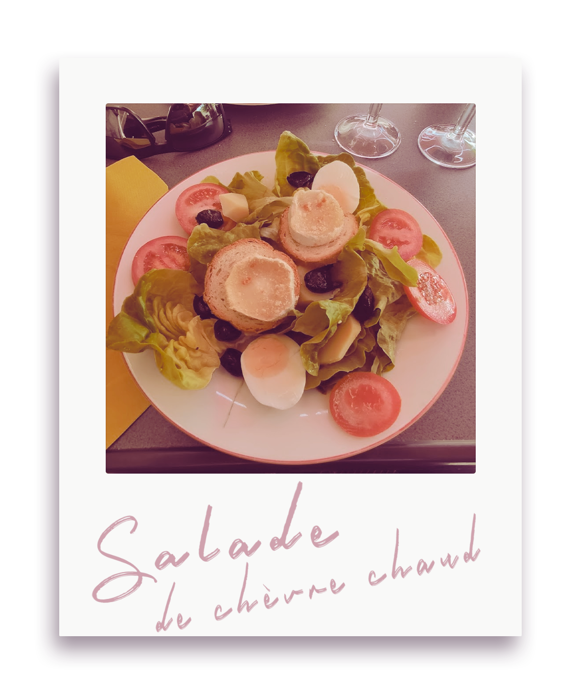
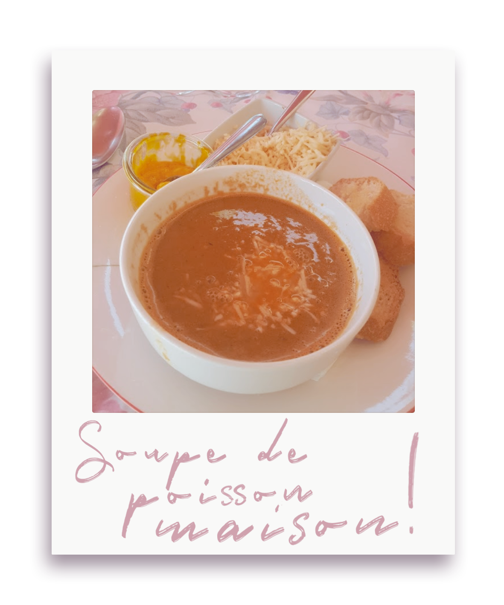
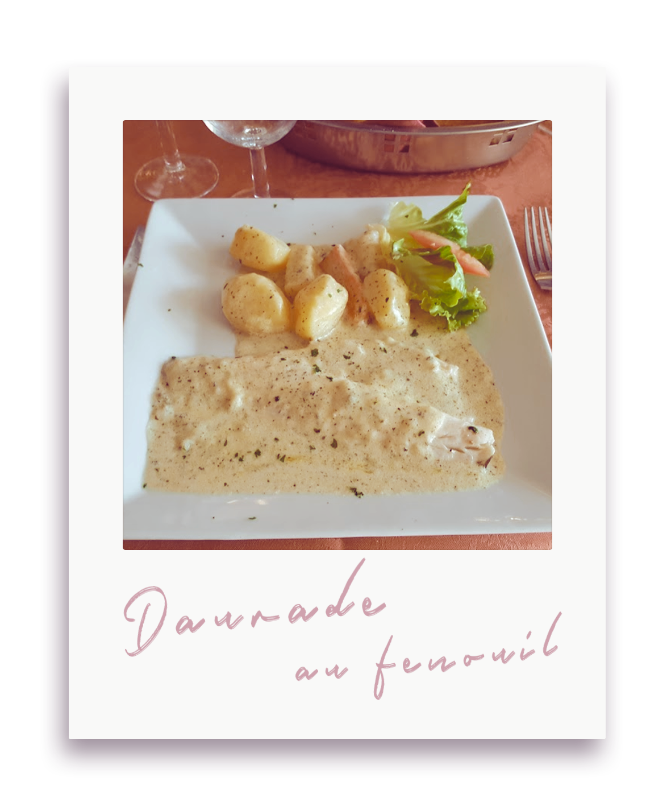
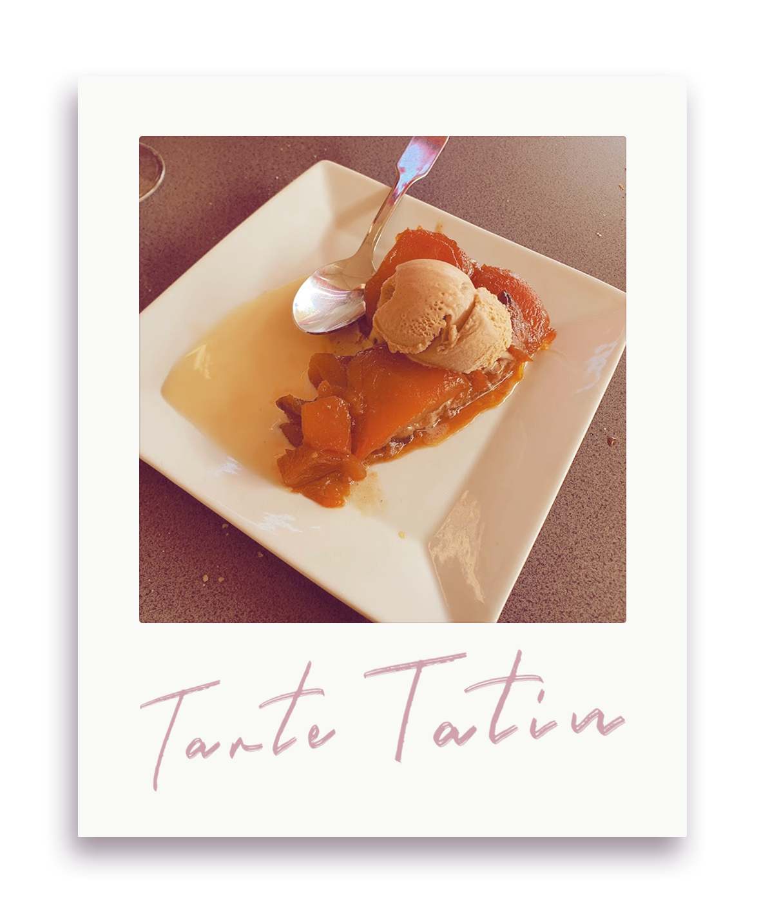
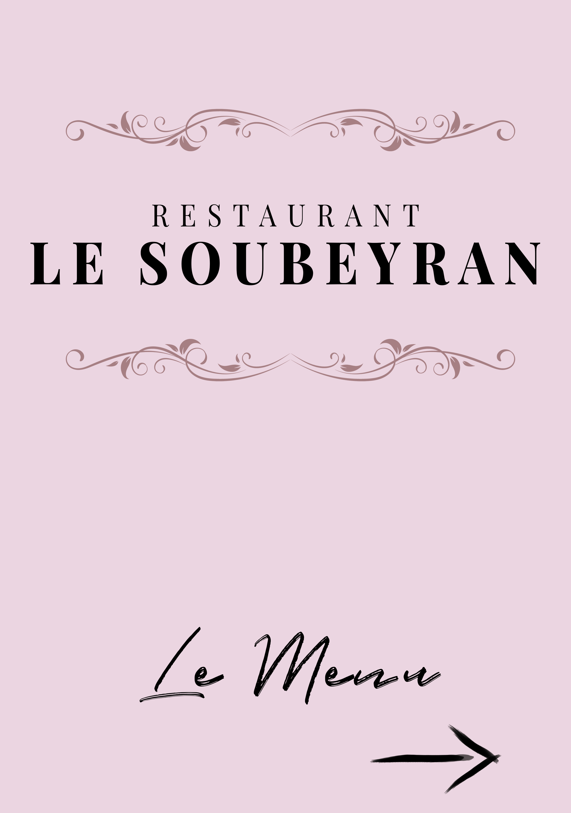

le-soubeyran
fr
0%
100%
À propos
Photos
Menus
“Accueil très chaleureux, la cuisine est excellente et généreuse. A ne pas manquer.”,
Nicole
“Excellente cuisine ! On s'est régalés ! Très bon accueil. Je recommande.”,
Céline
“Simple mais bon et accueil très chaleureux. Nous avons passé une très bonne soirée. Merci”,
Simon
“Excellent accueil, entrées très bonnes, poisson sauce au champagne miam...”,
Nathalie
“Une dame d’une gentillesse incroyable et des plats au niveau de cet accueil hors du commun”,
Paul-Emile
“Super bon, assiette garni, service relativement rapide je recommande se restaurant.”,
Chloë
“Accueil sympathique, couscous Excellent, je recommande”,
Valerie
“Plats simples mais de qualité. On a passé un bon moment.”,
Maïeva
“Bonne table très agréable là patronne gentille de passage à manosque”,
Joseph
“Couscous excellent et service agréable.”,
Baptiste
“Lieu très sympathique,cuisine excellente,je recommande”,
Ducceschi
“Très bon, propriétaire toujours souriante et gentille prenez un couscous 😃”,
Florian
“Excellente cuisine. Très bon accueil. A connaître absolument. Prix très corrects.”,
Catherine
“Accueil très sympathique et repas copieux et délicieux. Je recommande.”,
Renaud
“Super couscous et dessert maison. Accueil super chaleureux. Prix plus que raisonnable. Je recommande”,
Aleksandra
“Un accueil sympathique et un service efficace. Des prix tout a fait corrects. Le choix des plats et la carte des desserts viennent complèter une bonne adresse. Je recommande”,
Phil
“Correct prix raisonnable”,
Pascal
“Excellent à tous points de vue, qualité, prix, et accueil remarquable.Allez-y en confiance !”,
Bost
“Excellent qualité prix, nous avons mangé un très bon couscous, rien à redire allez y”,
Jean-Charles
“Bonne cuisine...très copieux...la régalade assurée”,
Tozier
“Bonne cuisine...très copieux...la régalade assurée”,
Tozier
“Excellent qualité prix, nous avons mangé un très bon couscous, rien à redire allez y”,
Jean-Charles
“Excellent à tous points de vue, qualité, prix, et accueil remarquable.Allez-y en confiance !”,
Bost
“Correct prix raisonnable”,
Pascal
“Un accueil sympathique et un service efficace. Des prix tout a fait corrects. Le choix des plats et la carte des desserts viennent complèter une bonne adresse. Je recommande”,
Phil
“Super couscous et dessert maison. Accueil super chaleureux. Prix plus que raisonnable. Je recommande”,
Aleksandra
“Accueil très sympathique et repas copieux et délicieux. Je recommande.”,
Renaud
“Excellente cuisine. Très bon accueil. A connaître absolument. Prix très corrects.”,
Catherine
“Très bon, propriétaire toujours souriante et gentille prenez un couscous 😃”,
Florian
“Lieu très sympathique,cuisine excellente,je recommande”,
Ducceschi
“Couscous excellent et service agréable.”,
Baptiste
“Bonne table très agréable là patronne gentille de passage à manosque”,
Joseph
“Plats simples mais de qualité. On a passé un bon moment.”,
Maïeva
“Accueil sympathique, couscous Excellent, je recommande”,
Valerie
“Super bon, assiette garni, service relativement rapide je recommande se restaurant.”,
Chloë
“Une dame d’une gentillesse incroyable et des plats au niveau de cet accueil hors du commun”,
Paul-Emile
“Excellent accueil, entrées très bonnes, poisson sauce au champagne miam...”,
Nathalie
“Simple mais bon et accueil très chaleureux. Nous avons passé une très bonne soirée. Merci”,
Simon
“Excellente cuisine ! On s'est régalés ! Très bon accueil. Je recommande.”,
Céline
“Accueil très chaleureux, la cuisine est excellente et généreuse. A ne pas manquer.”,
Nicole
Le restaurant en quelques mots...
Depuis 1988, le
Restaurant le Soubeyran
vous prépare des plats savoureux, pleins de saveurs tout en mettant en avant les produits de la région Alpes-de-Haute-Provence.





“Sur place ou à emporter, n'hésitez pas et appelez nous”
13 boulevard des tilleuls
04100, Manosque
04 92 72 54 82
Lundi
Mardi
Mercredi
Jeudi
Vendredi
Samedi
Dimanche
12h00 — 14h00 | 19h00 — 21h30
12h00 — 14h00 | Fermée
12h00 — 14h00 | 19h00 — 21h30
12h00 — 14h00 | 19h00 — 21h30
12h00 — 14h00 | 19h00 — 21h30
12h00 — 14h00 | 19h00 — 22h00
12h00 — 14h00 | 19h00 — 21h30